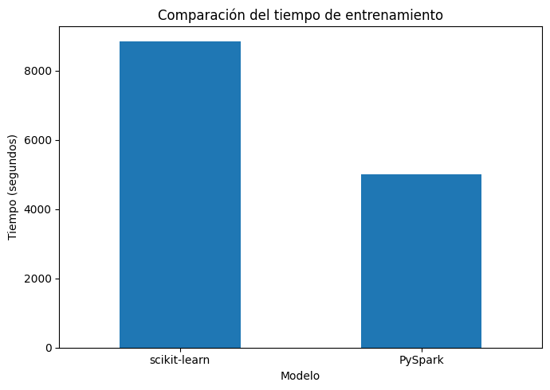
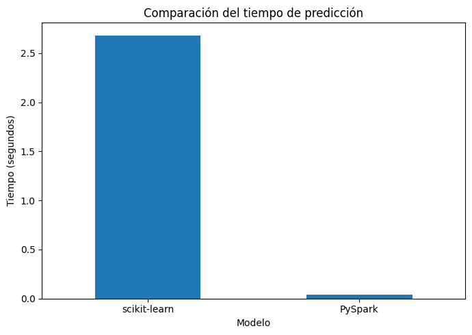

Comparación de resultados: scikit-learn vs PySpark#
En esta sección se comparan los resultados obtenidos con los flujos de modelado implementados en scikit-learn y PySpark.
La comparación considera tanto el desempeño predictivo como el costo computacional, con el fin de evaluar las ventajas y limitaciones de cada enfoque sobre el dataset completo de Lending Club.
Tabla comparativa de métricas#
import pandas as pd
comparison_metrics = pd.DataFrame({
"Métrica": ["Accuracy", "Precision", "Recall", "F1-score", "ROC AUC"],
"scikit-learn": [0.881205, 0.000000, 0.000000, 0.000000, 0.695485],
"PySpark": [None, 0.775518, None, 0.824741, 0.686732]
})
comparison_metrics
| Métrica | scikit-learn | PySpark | |
|---|---|---|---|
| 0 | Accuracy | 0.881205 | NaN |
| 1 | Precision | 0.000000 | 0.775518 |
| 2 | Recall | 0.000000 | NaN |
| 3 | F1-score | 0.000000 | 0.824741 |
| 4 | ROC AUC | 0.695485 | 0.686732 |
La comparación de métricas muestra que ambos enfoques alcanzaron valores de ROC AUC relativamente cercanos, lo cual sugiere una capacidad de discriminación moderada en ambos casos.
Sin embargo, en scikit-learn se observó explícitamente que el modelo no predijo ningún caso positivo bajo el umbral por defecto, mientras que en PySpark las métricas ponderadas reflejan un desempeño global razonable, aunque también condicionado por el desbalance de clases.
Tabla comparativa de tiempos de cómputo#
comparison_times = pd.DataFrame({
"Etapa": ["Preprocesamiento", "Entrenamiento con validación", "Predicción"],
"scikit-learn (s)": [None, 8845.24, 2.68],
"PySpark (s)": [None, 4996.80, 0.04]
})
comparison_times
| Etapa | scikit-learn (s) | PySpark (s) | |
|---|---|---|---|
| 0 | Preprocesamiento | NaN | NaN |
| 1 | Entrenamiento con validación | 8845.24 | 4996.80 |
| 2 | Predicción | 2.68 | 0.04 |
En términos de tiempo de cómputo, el flujo de PySpark mostró una ventaja importante sobre scikit-learn en la etapa de entrenamiento con validación cruzada, reduciendo de manera notable el tiempo total requerido.
Asimismo, el tiempo de predicción en PySpark fue considerablemente menor. Estos resultados sugieren que, sobre el dataset completo y en el entorno evaluado, PySpark ofrece un flujo más eficiente en términos computacionales para el entrenamiento y la inferencia.
Gráfico Comparación de Tiempos#
import pandas as pd
import matplotlib.pyplot as plt
train_times = pd.DataFrame({
"Modelo": ["scikit-learn", "PySpark"],
"Tiempo (s)": [8845.24, 4996.80]
})
train_times.plot(kind="bar", x="Modelo", y="Tiempo (s)", figsize=(7, 5), legend=False)
plt.title("Comparación del tiempo de entrenamiento")
plt.ylabel("Tiempo (segundos)")
plt.xticks(rotation=0)
plt.tight_layout()
plt.show()

pred_times = pd.DataFrame({
"Modelo": ["scikit-learn", "PySpark"],
"Tiempo (s)": [2.68, 0.04]
})
pred_times.plot(kind="bar", x="Modelo", y="Tiempo (s)", figsize=(7, 5), legend=False)
plt.title("Comparación del tiempo de predicción")
plt.ylabel("Tiempo (segundos)")
plt.xticks(rotation=0)
plt.tight_layout()
plt.show()

Interpretación de los tiempos de cómputo#
La separación entre los tiempos de entrenamiento y predicción permite una comparación más clara entre ambos enfoques, dado que se encuentran en escalas muy diferentes.
En la etapa de entrenamiento, PySpark mostró un tiempo considerablemente menor que scikit-learn, lo cual sugiere una mayor eficiencia computacional al trabajar con el dataset completo.
En la etapa de predicción, ambos modelos fueron rápidos, aunque PySpark volvió a presentar un tiempo inferior. Esto indica que la principal diferencia entre ambos enfoques se observa especialmente en el costo del entrenamiento con validación.
Reflexión crítica final#
A partir de los resultados obtenidos, se observa que PySpark fue más rápido que scikit-learn en el entrenamiento y en la predicción sobre el dataset completo. En particular, el tiempo total de entrenamiento con validación cruzada fue menor en PySpark, mientras que el tiempo de predicción también resultó inferior. Esta diferencia puede explicarse por varios factores: el trabajo distribuido de Spark, el uso de cache() sobre el DataFrame transformado, la configuración explícita de memoria y paralelismo de la sesión Spark, y una mejor adaptación del flujo al procesamiento de grandes volúmenes de datos. En contraste, el flujo de scikit-learn, aunque funcional, resultó mucho más costoso en tiempo dentro de un entorno local al combinar GridSearchCV, validación cruzada y codificación one-hot sobre el dataset completo.
En cuanto al desempeño predictivo, ninguno de los dos enfoques fue realmente preciso para identificar la clase minoritaria bajo la configuración actual. Aunque scikit-learn obtuvo un valor de ROC AUC ligeramente superior al de PySpark, ambos modelos presentaron el mismo problema central: clasificaron todas las observaciones del conjunto de prueba como pertenecientes a la clase mayoritaria (default = 0). Por tanto, en términos prácticos, ninguno de los dos modelos logró una detección adecuada de los préstamos en default usando el umbral de decisión por defecto. Esto muestra que una métrica global como ROC AUC no es suficiente por sí sola en un problema desbalanceado.
Respecto a a partir de qué volumen de datos PySpark comienza a superar a scikit-learn, los resultados de este proyecto sugieren que la ventaja de PySpark empieza a hacerse visible precisamente cuando se trabaja con un dataset de este tamaño, superior a 2.2 millones de registros. En conjuntos pequeños o medianos, scikit-learn suele ser más simple y eficiente por su menor sobrecarga. Sin embargo, al escalar hacia volúmenes grandes, el costo computacional de scikit-learn en memoria local crece de forma importante, mientras que PySpark ofrece un flujo más robusto y estable para manejar el procesamiento completo en formato distribuido. Aunque este proyecto no evaluó distintos tamaños intermedios de muestra, la evidencia observada sugiere que el punto de quiebre aparece cuando el volumen de datos empieza a tensionar claramente la memoria y el tiempo de cómputo en un entorno local.
En relación con la interpretabilidad, LIME aportó una explicación local útil para entender por qué el modelo clasificó incorrectamente una instancia específica. Gracias a esta herramienta fue posible identificar qué variables empujaron la predicción hacia la clase no default y visualizar la contribución local de ciertas características. Esto permitió complementar la evaluación cuantitativa con una interpretación más fina del comportamiento del modelo. No obstante, LIME también presenta limitaciones claras en entornos distribuidos: trabaja en memoria local, requiere acceso directo a un modelo capaz de responder sobre observaciones perturbadas y, por tanto, se integra de forma mucho más natural con scikit-learn que con PySpark. En consecuencia, su utilidad en este proyecto fue mayor para el modelo local que para el flujo distribuido.
Finalmente, las condiciones obligatorias de la guía tuvieron un efecto importante en el rendimiento. El uso del dataset completo incrementó notablemente el costo computacional, pero hizo la comparación más realista. La prohibición de transferir los datos completos al driver en PySpark obligó a mantener un flujo genuinamente distribuido, lo cual fue metodológicamente correcto. El uso de CrossValidator en PySpark y GridSearchCV en scikit-learn elevó significativamente los tiempos de entrenamiento, pero permitió una comparación justa entre configuraciones de hiperparámetros. La exigencia de cachear el DataFrame transformado en Spark ayudó a estabilizar el procesamiento posterior, mientras que la configuración explícita de memoria y paralelismo fue clave para que el flujo distribuido resultara viable. En conjunto, estas condiciones aumentaron el costo experimental, pero también fortalecieron la validez de la comparación entre ambos entornos.
En síntesis, PySpark mostró una ventaja clara en eficiencia computacional sobre el dataset completo, mientras que scikit-learn resultó más costoso en tiempo dentro del entorno local utilizado. Sin embargo, ambos enfoques enfrentaron la misma limitación principal: la incapacidad de detectar adecuadamente la clase minoritaria bajo la configuración actual. Esto sugiere que, más allá del entorno de ejecución, el principal reto del problema está en el tratamiento del desbalance de clases.